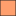

<!doctype html>
<html lang="en">
    <head>
        <meta charset="utf-8">
        <meta http-equiv="X-UA-Compatible" content="IE=edge">
        <meta name="viewport" content="initial-scale=1,user-scalable=no,maximum-scale=1,width=device-width">
        <meta name="mobile-web-app-capable" content="yes">
        <meta name="apple-mobile-web-app-capable" content="yes">
        <link rel="stylesheet" href="css/leaflet.css">
        <link rel="stylesheet" href="css/qgis2web.css"><link rel="stylesheet" href="css/fontawesome-all.min.css">
        <style>
        #map {
            width: 1500px;
            height: 850px;
        }
        </style>
        <title>Cannabis Permits and Cropland Types in Santa Barbara County</title>
    </head>
    <body>
        <div id="map">
        </div>
        <script src="js/qgis2web_expressions.js"></script>
        <script src="js/leaflet.js"></script>
        <script src="js/leaflet-svg-shape-markers.min.js"></script>
        <script src="js/leaflet.rotatedMarker.js"></script>
        <script src="js/leaflet.pattern.js"></script>
        <script src="js/leaflet-hash.js"></script>
        <script src="js/Autolinker.min.js"></script>
        <script src="js/rbush.min.js"></script>
        <script src="js/labelgun.min.js"></script>
        <script src="js/labels.js"></script>
        <script src="data/SantaBarbaraRegion_1.js"></script>
        <script src="data/SantaBarbaraCounty_2.js"></script>
        <script src="data/CannabisPermits_3.js"></script>
        <script>
        var map = L.map('map', {
            zoomControl:true, maxZoom:28, minZoom:1
        }).fitBounds([[34.48163802848793,-120.73853992886606],[35.13127814908583,-119.3408677461196]]);
        var hash = new L.Hash(map);
        map.attributionControl.setPrefix('<a href="https://github.com/tomchadwin/qgis2web" target="_blank">qgis2web</a> &middot; <a href="https://leafletjs.com" title="A JS library for interactive maps">Leaflet</a> &middot; <a href="https://qgis.org">QGIS</a>');
        var autolinker = new Autolinker({truncate: {length: 30, location: 'smart'}});
        var bounds_group = new L.featureGroup([]);
        function setBounds() {
        }
        map.createPane('pane_StamenTonerHybrid_0');
        map.getPane('pane_StamenTonerHybrid_0').style.zIndex = 400;
        var layer_StamenTonerHybrid_0 = L.tileLayer('http://tile.stamen.com/toner-hybrid/{z}/{x}/{y}.png', {
            pane: 'pane_StamenTonerHybrid_0',
            opacity: 1.0,
            attribution: '<a href="http://maps.stamen.com/">Map tiles by Stamen Design, under CC BY 3.0. Data by OpenStreetMap, under ODbL</a>',
            minZoom: 1,
            maxZoom: 28,
            minNativeZoom: 0,
            maxNativeZoom: 20
        });
        layer_StamenTonerHybrid_0;
        map.addLayer(layer_StamenTonerHybrid_0);
        function pop_SantaBarbaraRegion_1(feature, layer) {
            var popupContent = '<table>\
                    <tr>\
                        <td colspan="2">' + (feature.properties['Shape_Leng'] !== null ? autolinker.link(feature.properties['Shape_Leng'].toLocaleString()) : '') + '</td>\
                    </tr>\
                    <tr>\
                        <td colspan="2">' + (feature.properties['Shape_Area'] !== null ? autolinker.link(feature.properties['Shape_Area'].toLocaleString()) : '') + '</td>\
                    </tr>\
                </table>';
            layer.bindPopup(popupContent, {maxHeight: 400});
        }

        function style_SantaBarbaraRegion_1_0() {
            return {
                pane: 'pane_SantaBarbaraRegion_1',
                opacity: 1,
                color: 'rgba(0,114,202,1.0)',
                dashArray: '',
                lineCap: 'butt',
                lineJoin: 'miter',
                weight: 3.0, 
                fill: true,
                fillOpacity: 1,
                fillColor: 'rgba(147,202,243,0.2)',
                interactive: true,
            }
        }
        map.createPane('pane_SantaBarbaraRegion_1');
        map.getPane('pane_SantaBarbaraRegion_1').style.zIndex = 401;
        map.getPane('pane_SantaBarbaraRegion_1').style['mix-blend-mode'] = 'normal';
        var layer_SantaBarbaraRegion_1 = new L.geoJson(json_SantaBarbaraRegion_1, {
            attribution: '',
            interactive: true,
            dataVar: 'json_SantaBarbaraRegion_1',
            layerName: 'layer_SantaBarbaraRegion_1',
            pane: 'pane_SantaBarbaraRegion_1',
            onEachFeature: pop_SantaBarbaraRegion_1,
            style: style_SantaBarbaraRegion_1_0,
        });
        bounds_group.addLayer(layer_SantaBarbaraRegion_1);
        map.addLayer(layer_SantaBarbaraRegion_1);
        function pop_SantaBarbaraCounty_2(feature, layer) {
            var popupContent = '<table>\
                    <tr>\
                        <td colspan="2">' + (feature.properties['CropCatego'] !== null ? autolinker.link(feature.properties['CropCatego'].toLocaleString()) : '') + '</td>\
                    </tr>\
                    <tr>\
                        <td colspan="2">' + (feature.properties['Shape_Leng'] !== null ? autolinker.link(feature.properties['Shape_Leng'].toLocaleString()) : '') + '</td>\
                    </tr>\
                    <tr>\
                        <td colspan="2">' + (feature.properties['Shape_Area'] !== null ? autolinker.link(feature.properties['Shape_Area'].toLocaleString()) : '') + '</td>\
                    </tr>\
                </table>';
            layer.bindPopup(popupContent, {maxHeight: 400});
        }

        function style_SantaBarbaraCounty_2_0(feature) {
            switch(String(feature.properties['CropCatego'])) {
                case 'greenhouse':
                    return {
                pane: 'pane_SantaBarbaraCounty_2',
                opacity: 1,
                color: 'rgba(35,35,35,1.0)',
                dashArray: '',
                lineCap: 'butt',
                lineJoin: 'miter',
                weight: 1.0, 
                fill: true,
                fillOpacity: 1,
                fillColor: 'rgba(0,0,4,1.0)',
                interactive: true,
            }
                    break;
                case 'orchard':
                    return {
                pane: 'pane_SantaBarbaraCounty_2',
                opacity: 1,
                color: 'rgba(35,35,35,1.0)',
                dashArray: '',
                lineCap: 'butt',
                lineJoin: 'miter',
                weight: 1.0, 
                fill: true,
                fillOpacity: 1,
                fillColor: 'rgba(59,15,111,1.0)',
                interactive: true,
            }
                    break;
                case 'row':
                    return {
                pane: 'pane_SantaBarbaraCounty_2',
                opacity: 1,
                color: 'rgba(35,35,35,1.0)',
                dashArray: '',
                lineCap: 'butt',
                lineJoin: 'miter',
                weight: 1.0, 
                fill: true,
                fillOpacity: 1,
                fillColor: 'rgba(140,41,129,1.0)',
                interactive: true,
            }
                    break;
                case 'Unidentified Cropland':
                    return {
                pane: 'pane_SantaBarbaraCounty_2',
                opacity: 1,
                color: 'rgba(35,35,35,1.0)',
                dashArray: '',
                lineCap: 'butt',
                lineJoin: 'miter',
                weight: 1.0, 
                fill: true,
                fillOpacity: 1,
                fillColor: 'rgba(222,73,105,1.0)',
                interactive: true,
            }
                    break;
                case 'vineyard':
                    return {
                pane: 'pane_SantaBarbaraCounty_2',
                opacity: 1,
                color: 'rgba(35,35,35,1.0)',
                dashArray: '',
                lineCap: 'butt',
                lineJoin: 'miter',
                weight: 1.0, 
                fill: true,
                fillOpacity: 1,
                fillColor: 'rgba(254,159,109,1.0)',
                interactive: true,
            }
                    break;
                default:
                    return {
                pane: 'pane_SantaBarbaraCounty_2',
                opacity: 1,
                color: 'rgba(35,35,35,1.0)',
                dashArray: '',
                lineCap: 'butt',
                lineJoin: 'miter',
                weight: 1.0, 
                fill: true,
                fillOpacity: 1,
                fillColor: 'rgba(252,253,191,1.0)',
                interactive: true,
            }
                    break;
            }
        }
        map.createPane('pane_SantaBarbaraCounty_2');
        map.getPane('pane_SantaBarbaraCounty_2').style.zIndex = 402;
        map.getPane('pane_SantaBarbaraCounty_2').style['mix-blend-mode'] = 'normal';
        var layer_SantaBarbaraCounty_2 = new L.geoJson(json_SantaBarbaraCounty_2, {
            attribution: '',
            interactive: true,
            dataVar: 'json_SantaBarbaraCounty_2',
            layerName: 'layer_SantaBarbaraCounty_2',
            pane: 'pane_SantaBarbaraCounty_2',
            onEachFeature: pop_SantaBarbaraCounty_2,
            style: style_SantaBarbaraCounty_2_0,
        });
        bounds_group.addLayer(layer_SantaBarbaraCounty_2);
        map.addLayer(layer_SantaBarbaraCounty_2);
        function pop_CannabisPermits_3(feature, layer) {
            var popupContent = '<table>\
                    <tr>\
                        <td colspan="2">' + (feature.properties['ApplicName'] !== null ? autolinker.link(feature.properties['ApplicName'].toLocaleString()) : '') + '</td>\
                    </tr>\
                    <tr>\
                        <td colspan="2">' + (feature.properties['SiteAddres'] !== null ? autolinker.link(feature.properties['SiteAddres'].toLocaleString()) : '') + '</td>\
                    </tr>\
                    <tr>\
                        <td colspan="2">' + (feature.properties['Status'] !== null ? autolinker.link(feature.properties['Status'].toLocaleString()) : '') + '</td>\
                    </tr>\
                    <tr>\
                        <td colspan="2">' + (feature.properties['Lat'] !== null ? autolinker.link(feature.properties['Lat'].toLocaleString()) : '') + '</td>\
                    </tr>\
                    <tr>\
                        <td colspan="2">' + (feature.properties['Lon'] !== null ? autolinker.link(feature.properties['Lon'].toLocaleString()) : '') + '</td>\
                    </tr>\
                </table>';
            layer.bindPopup(popupContent, {maxHeight: 400});
        }

        function style_CannabisPermits_3_0() {
            return {
                pane: 'pane_CannabisPermits_3',
                shape: 'triangle',
                radius: 8.0,
                opacity: 1,
                color: 'rgba(61,128,53,1.0)',
                dashArray: '',
                lineCap: 'butt',
                lineJoin: 'miter',
                weight: 2.0,
                fill: true,
                fillOpacity: 1,
                fillColor: 'rgba(84,176,74,1.0)',
                interactive: true,
            }
        }
        map.createPane('pane_CannabisPermits_3');
        map.getPane('pane_CannabisPermits_3').style.zIndex = 403;
        map.getPane('pane_CannabisPermits_3').style['mix-blend-mode'] = 'normal';
        var layer_CannabisPermits_3 = new L.geoJson(json_CannabisPermits_3, {
            attribution: '',
            interactive: true,
            dataVar: 'json_CannabisPermits_3',
            layerName: 'layer_CannabisPermits_3',
            pane: 'pane_CannabisPermits_3',
            onEachFeature: pop_CannabisPermits_3,
            pointToLayer: function (feature, latlng) {
                var context = {
                    feature: feature,
                    variables: {}
                };
                return L.shapeMarker(latlng, style_CannabisPermits_3_0(feature));
            },
        });
        bounds_group.addLayer(layer_CannabisPermits_3);
        map.addLayer(layer_CannabisPermits_3);
            var title = new L.Control();
            title.onAdd = function (map) {
                this._div = L.DomUtil.create('div', 'info');
                this.update();
                return this._div;
            };
            title.update = function () {
                this._div.innerHTML = '<h2>Cannabis Permits in Santa Barbara County</h2><p>Assignment 2 - Zachary Canter</p>';
            };
            title.addTo(map);
        var baseMaps = {};
        L.control.layers(baseMaps,{' Cannabis Permits': layer_CannabisPermits_3,'Santa Barbara County<br /><table><tr><td style="text-align: center;"></td><td>greenhouse</td></tr><tr><td style="text-align: center;"></td><td>orchard</td></tr><tr><td style="text-align: center;"></td><td>row</td></tr><tr><td style="text-align: center;"></td><td>Unidentified Cropland</td></tr><tr><td style="text-align: center;"></td><td>vineyard</td></tr><tr><td style="text-align: center;"></td><td></td></tr></table>': layer_SantaBarbaraCounty_2,' Santa Barbara Region': layer_SantaBarbaraRegion_1,"Stamen Toner Hybrid": layer_StamenTonerHybrid_0,},{collapsed:false}).addTo(map);
        setBounds();
        </script>
    </body>
</html>
